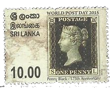
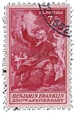
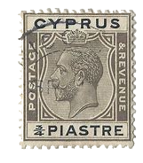
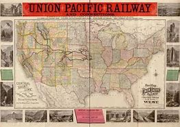
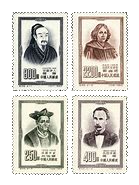
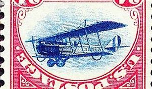
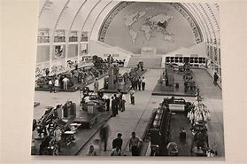
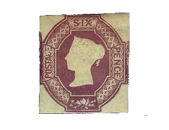
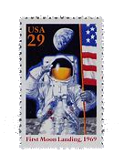

History of Stamps
Before the history of stamps, mail delivery usually required payment of postage fees, but there was no unified standard or form to prove payment. This phase can be traced back to ancient times, where the payment methods for mail fees varied by region and country.
- 1840: The first postage stamp, Britain's Penny Black, was issued.
- 1847: The United States issued its first set of stamps, featuring Benjamin Franklin and George Washington.
- 1850: Stamps begin to be widely issued in Europe and other countries.
The early stage of stamps (1840s-1860s) is considered the origin period of stamps. The most famous example is the Penny Black, the first postage stamp issued by the United Kingdom in 1840. Following that, other countries also began issuing their own stamps, making stamps the standard way to prove postage payment.
- 1864: The Universal Postal Union (UPU) is established to promote cooperation and development of international postal services.
- 1869: The United States completes the first transcontinental railway line, promoting fast and efficient mail service.
- 1870s: Countries begin issuing commemorative stamps to commemorate important historical events, celebrities and anniversaries.
The diversification phase of stamps (1870s-1930s) saw postal administrations creating a wider variety of stamps to meet different needs and commemorate events. Stamp designs became more diverse, featuring various patterns, colors, shapes, and materials. Stamp collecting also became a popular hobby during this period.
 1918: During World War I, many countries issued stamps commemorating the
war, fundraising and charity
activities.
1918: During World War I, many countries issued stamps commemorating the
war, fundraising and charity
activities.- 1920: Germany issued the world's first airplane stamp to commemorate the development of flying postal services.
- 1935: The United States issues its first stamp to commemorate the Atlanta Postal Show, the first postal dominated stamp show in U.S. history.
The advancement of stamp printing technology (1940s-present) brought about more complex and precise stamp designs and production. New printing methods and materials were introduced, resulting in finer details, richer colors, and improved security features for stamps. Additionally, the development of digital technology opened up new possibilities for stamp design and printing.
- 1956: The world's first self-adhesive stamp was issued by Cyprus.
- 1969: The United States issued the first commemorative lunar landing stamp, commemorating the Apollo 11 mission.
- 2000: The United Nations Postal Administration issued Millennium commemorative stamps to celebrate the new millennium.